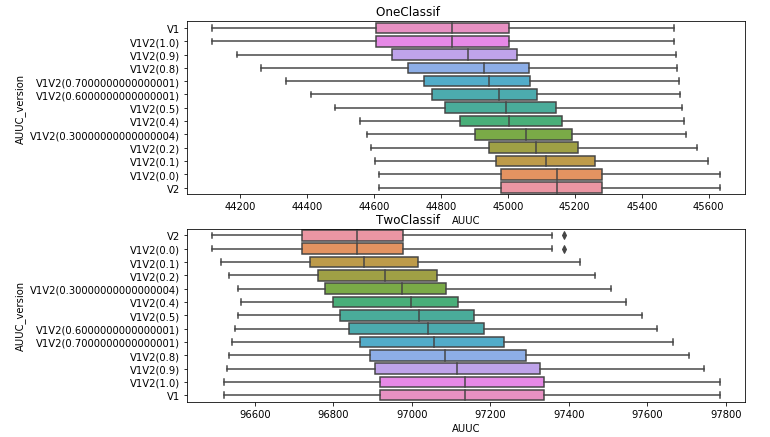

- RCT 以外では使わない処置確率が特徴によって違うデータでは、劣ったモデルの AUUC が完璧なモデルを上回る例を作れる。論文はそのまま計算した AUUC を RCT のデータに限るよう勧める。
- 重み \(1/q_i\)各人の寄与を、その人が実際に受けた処置の確率 \(q_i\) の逆数で重みづけする。曲線の縦軸と横軸の両方で、処置群と対照群のつり合いを取り直す。
- \(\nu^\ast = \Pr(Y{=}1)\)二つの作り方 V1 と V2 を \(1-\nu : \nu\) で混ぜた曲線は、どの \(\nu\) でも偏りがない。50:50 の RCT では、\(\nu\) を全体の反応率にすると分散が最小になる。
アップリフト曲線と Qini 曲線には文献ごとに違う定義が並んでいる
真の効果が分かる合成データなら、推定した CATE と真の値の二乗誤差（PEHE）でモデルを評価できる。実データでは個人の効果が観測できないので、モデルの推定値の大きい順に人を並べ、上位の何割かについて処置群と対照群の反応数の差を見る。この差を割合ごとに描いたのが Qini 曲線やアップリフト曲線で、曲線の下の面積を AUUC（Area Under the Uplift Curve）と呼ぶ。
論文は Devriendt ら（2020）の整理を引き、定義の違いを二つの軸で分ける。処置群と対照群を別々に並べるか、まとめて並べるかと、反応数を絶対数で数えるか、群の人数で割った相対値で数えるかである。さらに三つ目の違いとして、群の大きさの補正に全体の人数を使うか、上位 \(k\) 人の中の人数を使うかを挙げる。論文によれば、これらの違いの多くは、処置群と対照群の人数の偏りをどう補正するかという同じ問題への答え方の違いである。
前提として論文は Zhang ら（2020）の分解を使い、観測データから計算するアップリフト \(p_1(x)-p_0(x)\) が CATE と一致する条件を確認している。特徴 \(x\) で条件づければ潜在的結果が処置と独立であること（unconfoundedness）、どの \(x\) でも処置と対照の両方を受ける確率が正であること（overlap）、他人の処置が自分の結果に影響しないこと（SUTVA）の三つである。論文はクーポン共有サイトがある広告の場面では SUTVA が崩れうることにも触れている。
AUUC はモデルの上位に入った人の真の効果を足し上げた量を推定している
論文は理論上のアップリフト曲線を、モデル \(\hat u\) の推定値で上位の割合 \(r\) に入る人について、真の CATE \(\tau(x)\) を積分した量として定義する。
\(\xi(r)\) は上位 \(r\) に入るための推定値のしきい値である。\(V_N\) を 0 から \(p\) まで積分した量を、論文は AUNUC と呼ぶ。同じデータの上なら AUUC は AUNUC の定数倍にすぎないので、モデルの比較にはどちらを使っても同じ結果になる。
データから曲線を描くときは、推定値の大きい順に並べた人を左から一人ずつ見ていく。処置群で反応した人なら \(1/N\) 上がり、対照群で反応した人なら \(1/N\) 下がり、それ以外は水平に進む。論文はこの作り方を V1 と呼ぶ。最後に、原点と曲線の終点を結んだ直線（ランダムに配った場合）との間の面積を求め、これを ΔAUNUC とする。
処置確率が特徴によって違うデータでは、完璧なモデルより劣ったモデルのほうが AUUC が高くなりうる
論文は人数の等しい 4 つの群を置く。処置したときだけ反応する CO、いつも反応する ST、いつも反応しない LC、処置しないときだけ反応する SD である。真の効果は CO が 1、ST と LC が 0、SD が −1 なので、完璧なモデルは CO、ST と LC、SD の順に並べる。
ここで、処置を受ける確率を群ごとに変える。CO は 1/4、ST は 5/6、LC は 5/12、SD は 1/2 で、全体の処置率は 0.5 になる。V1 の作り方では群の中での曲線の傾きがこの処置率で決まる（論文 Table 3）。CO の傾きは 1/4 だが、ST と LC を合わせた傾きは 5/6 − 1/2 = 1/3 で、効果が 0 の群のほうが急に上がる。そのため、ST と LC を先に、CO をその次に並べる劣ったモデル \(\hat u_n\) のほうが、完璧なモデルより AUUC が大きくなる。
論文はこの例から、AUUC は RCT のデータ、つまり処置率が特徴によらないデータにだけ使うべきだと結論している。あわせて、この反例は処置確率の逆数で補正する式（IPS）を使えば解消できるとも述べている。
RCT でも処置群と対照群が 50:50 でなければ、AUUC によるモデルの順位が入れ替わりうる
処置率がどの群でも同じ \(q_0\) の RCT でも、\(q_0\) が 0.5 でなければ問題が残る。V1 での傾きは、CO が \(q_0\)、ST が \(2q_0-1\)、LC が 0、SD が \(q_0-1\) になる。\(q_0 = 3/4\) なら ST の傾きは 1/2 で、効果が同じ 0 の LC より大きい。このため、ST と LC を区別して ST を先に置くモデルのほうが、二つを区別しない完璧なモデルより AUUC が高くなる（解説者の計算では、曲線の下の面積が 0.234 対 0.219）。\(q_0 = 0.5\) なら ST の傾きも 0 になり、この問題は起きない。
この差はモデルの表現力の違いから来るのではないか、という反論に答えるため、論文は表現力が同じ例も示す。二つの群の反応をベルヌーイ分布とし、\(q_0 = 0.1\)、群 1 の処置時・非処置時の反応確率を 0.4 と 0.2、群 2 を 0.2 と 0.1 とする。真の効果は群 1（0.2）のほうが群 2（0.1）より大きい。ところが V1 での傾きは群 1 が −0.14、群 2 が −0.07 で、群 2 を先に並べるモデルのほうが AUUC は高くなる。\(q_0 = 0.5\) なら傾きは効果のちょうど半分になるので、この逆転は起きない。
論文のまとめは「AUUC を計算するときは、データの処置群と対照群をつり合わせておくべきだ」である。
各人の寄与を処置確率の逆数で重みづけし、曲線の縦軸と横軸の両方でつり合いを取り直す
論文は観測データの分布から、処置を 50:50 で割り付けた仮想の分布の上での曲線を計算し直す式を導く。データを推定値の大きい順に並べ、\(q_i = \pi(t_i \mid x_i)\) を \(i\) さんが実際に受けた処置の確率とすると、次のようになる。
\(1/q_i\) は縦軸の重みで、曲線の高さを 50:50 のデータに換算する。AUUC の式にある \(1/(2q_i)\) は横軸の重みである。処置群と対照群をまとめて並べる場合、縦軸だけを補正して \(\sum_k V(k)\) を計算すると、人数の少ない群の寄与を過小に見積もる、と論文は指摘する。RCT なら \(q_i\) は処置群と対照群の人数だけで決まる。
推定値が同じ人が続く区間では、並び順が決まらないので曲線が揺れる。論文は同じ値の区間ごとに最後の点だけを残し、その間を線形補間してから AUUC を計算する手順を示している。
AUUC が同じでも、予算や ROI の制約しだいで選ぶべきモデルは変わる
論文は Radcliffe（2012）がモデル選びの基準に挙げた 6 項目を紹介する。AUUC の値、増分の単調性、最大の効果、カットオフでの効果、学習データと検証データでの曲線の近さ、予測値の幅である。そのうえで、AUUC が同じで曲線の形が違うモデルをどう選ぶかを問う。
論文によれば、実際の問題は「制約のもとで関心のある量を最大にする」形をとる。関心のある量は増分ユーザー数、増分利益、ROI など、制約は ROI の下限や配布人数（≈ 予算）などである。ここでの ROI は「増分ユーザー数 ÷ 処置したユーザー数」で、原点から曲線上の点へ引いた直線の傾きに当たる。
論文の Fig. 4・5 は、AUUC がまったく同じ 3 本の曲線でこの違いを説明する。費用が安く ROI の下限がなければ、頂点が最も高い曲線を選ぶ。予算を気にせず ROI を最大にしたいなら、頂点での ROI が最も高い曲線を選ぶ。ROI の下限がとても高いなら、立ち上がりが最も急な曲線を選ぶ。こうした違いは AUUC という一つの数では区別できない。
曲線の作り方を V1 と V2 の混合に変えると、偏りを保ったまま分散を最小にできる
V1 は処置群で反応した人で上がり、対照群で反応した人で下がる。いつも反応する ST はどちらにも現れ、平均すると打ち消し合う。論文はラベルを裏返した V2 も偏りのない推定量になることを付録 C で示す。V2 は対照群で反応しなかった人で上がり、処置群で反応しなかった人で下がる。こちらではいつも反応しない LC が打ち消し合う。
論文は二つを混ぜた \(V_\nu\) もどの点でも偏りがないことと、その分散を最小にする \(\nu\) が上の \(\nu^\ast\) になることを示す。\(\alpha\) は処置率、\(p_1, p_0\) は処置時・非処置時の反応率である。50:50 の RCT（\(\alpha = 0.5\)）では、\(\nu^\ast\) は全体の反応率 \(\Pr(Y{=}1)\) に等しい。反応率が低いデータでは \(\nu^\ast\) が 0 に近く、V1 に近い作り方のほうが分散が小さい（解説者の注）。
合成データの実験では、2 種類のアップリフトモデルについて、101 個のデータセットで \(V_\nu\) による AUUC の分布を描き、分散が \(\nu\) の 0 と 1 の間のどこかで最小になることを確かめている（図5）。分散がどれだけ減るかを示す数値の表は論文にはない。なお、図の縦軸のラベルでは V1V2(1.0) の箱が V1 と、V1V2(0.0) の箱が V2 と同じ位置にあり、本文の定義 \(V_\nu = (1-\nu)V_1 + \nu V_2\) とは \(\nu\) の向きが逆になっている。

評価指標の論文で、予算はモデル選びの観点として触れるにとどまる
この論文が推定するのは個人の効果ではなく、アップリフトモデルの良し悪しを測る AUUC と、その分散の小さい推定量である。処置は二値（配る・配らない）で、反応も主に二値を想定する。コストは式に入っておらず、曲線の縦軸は反応数の増分である。
予算制約は直接は扱っていない。導入で「予算制約の観点からは、処置による行動の変化が大きい顧客から順に配る」と述べ、ROI の下限や配布人数の制約によって選ぶべきモデルが変わることを模式図で示すだけである。
（解説者の注）全員のコストが同じなら、アップリフト曲線の上位 \(k\) 人で止めることは、配布人数に上限を置く予算制約に当たる。この場合、ROI 順の割当て（ナップザック問題の連続緩和）は推定効果の大きい順に配ることと一致し、予算での価値は曲線のその位置の高さで読める。AUUC はこの高さをすべての予算について平均した量なので、決まった予算で使うモデルを選ぶなら、論文が述べるとおり曲線のその位置を見る必要がある。コストが人によって違う場合は効果 ÷ コストの順に並べた曲線が要るが、この論文は扱っていない。また、過去の配布方策で集めたログのように処置率が人によって違うデータでモデルを比べるときは、上の重み \(1/q_i\) が必要になる。
式と例は arXiv v3（2021 年 8 月 2 日）による。Crossref では出版版が見つからなかった。曲線の下の面積の値（0.122、0.133、0.188、0.063、0.234、0.219）は、論文が示す例の設定から解説者が計算した。
@misc{renaudin2021about,
title = {About evaluation metrics for contextual uplift modeling},
author = {Renaudin, Christophe and Martin, Matthieu},
year = {2021},
eprint = {2107.00537},
archivePrefix = {arXiv},
primaryClass = {math.OC},
doi = {10.48550/arXiv.2107.00537}
}